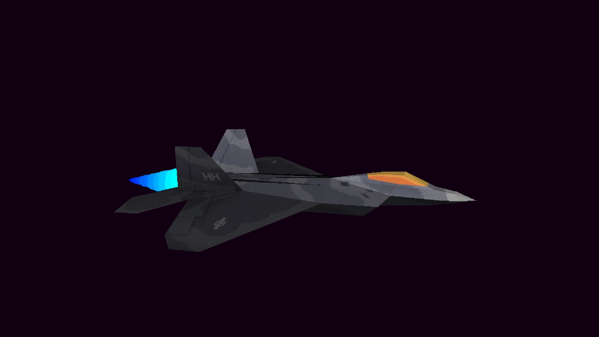

André Leles
Gameplay Programmer
Gameplay programmer focused on building gameplay systems and development tools for games.
Gameplay programmer focused on building gameplay systems and development tools for games.
Worked in collaboration with Gamecraft Studios and Choice Provisions on a shipped commercial title. The level editor I developed was used to create all levels in the game and by thousands of players on Steam and consoles.
View Published Game on Steam → View Published Game on PlayStation Store → View Published Game on Xbox →
Designed and implemented an in-game level editor system, enabling real-time level creation, modification, and testing.
Contributed to a shipped commercial title available on Steam and Consoles.
Technologies: Unreal Engine 5, C++, Blueprints
Daniel Zaidan
Phone: +55 31 99977-1696 (WhatsApp)
Tiago Zaidan
Phone: +55 31 99978-2493
Email: tiagozaidan@gmail.com
Alex Neuse (USA)
Phone: +1 (831) 325-6948
Phone: +45 27 74 69 41
Mike Roush (USA)
Email: mroush@choiceprovisions.com

Built a software renderer from scratch in C to explore the full rendering pipeline, from 3D transformations to rasterization and shading.
Technologies: C, Custom Graphics Pipeline
Email: andre.leles.br@gmail.com